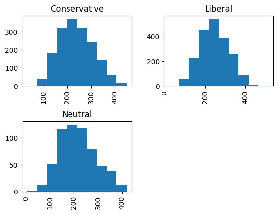

SEED = 2306406Tutorial
Load and preprocess data
import pandas as pd
url = "https://raw.githubusercontent.com/yiweiluo/GWStance/refs/heads/master/3_stance_detection/1_MTurk/full_annotations.tsv"
df_raw = pd.read_csv(url, sep = "\t") # Careful here, this document is a tsv (separator="\t" and not a csv (separator = ",")
df_raw.head()| Unnamed: 0 | MACE_pred | av_rating | sentence | worker_0 | worker_1 | worker_2 | worker_3 | worker_4 | worker_5 | worker_6 | worker_7 | round | batch | sent_id | disagree | agree | neutral | |
|---|---|---|---|---|---|---|---|---|---|---|---|---|---|---|---|---|---|---|
| 0 | 0 | disagrees | -1.000 | Global warming is a hoax. | disagrees | disagrees | disagrees | disagrees | disagrees | disagrees | disagrees | disagrees | 1 | 0 | s0 | NaN | NaN | NaN |
| 1 | 1 | neutral | 0.375 | Alarming levels of sea level rise are predicte... | neutral | neutral | neutral | agrees | agrees | neutral | neutral | agrees | 1 | 0 | s1 | NaN | NaN | NaN |
| 2 | 2 | neutral | 0.000 | Over the past several years, the United States... | neutral | neutral | neutral | neutral | neutral | neutral | neutral | neutral | 1 | 0 | s2 | NaN | NaN | NaN |
| 3 | 3 | agrees | 1.000 | Global warming is happening and it will be dan... | agrees | agrees | agrees | agrees | agrees | agrees | agrees | agrees | 1 | 0 | s3 | NaN | NaN | NaN |
| 4 | 4 | neutral | 0.000 | Some icebergs are cute. | neutral | neutral | neutral | neutral | neutral | neutral | neutral | neutral | 1 | 0 | s4 | NaN | NaN | NaN |
df = df_raw.loc[:,["sent_id", "sentence", "MACE_pred", "av_rating"]]
df = df.rename(columns={"MACE_pred" : "label_text"}) # Rename MACE_pred for conveniency
df| sent_id | sentence | label_text | av_rating | |
|---|---|---|---|---|
| 0 | s0 | Global warming is a hoax. | disagrees | -1.000 |
| 1 | s1 | Alarming levels of sea level rise are predicte... | neutral | 0.375 |
| 2 | s2 | Over the past several years, the United States... | neutral | 0.000 |
| 3 | s3 | Global warming is happening and it will be dan... | agrees | 1.000 |
| 4 | s4 | Some icebergs are cute. | neutral | 0.000 |
| ... | ... | ... | ... | ... |
| 2295 | t5 | Agriculture, in general, is responsible for a ... | neutral | 0.375 |
| 2296 | t6 | Hiring a White House "climate change czar" wou... | agrees | 0.750 |
| 2297 | t7 | More carbon is being released than stored. | neutral | 0.250 |
| 2298 | t8 | New laws are needed to crack down on climate a... | disagrees | -0.750 |
| 2299 | t9 | Scaring young people young people into believi... | disagrees | -0.750 |
2300 rows × 4 columns
df.groupby(["label_text"]).size()label_text
agrees 871
disagrees 441
neutral 988
dtype: int64df["ID"] = [f'ID-{i:04}' for i in range(len(df))]df["sentence-len"] = df["sentence"].apply(len)
df["sentence-len"].hist()
df["sentence-len"].describe()--------------------------------------------------------------------------- ImportError Traceback (most recent call last) Cell In[6], line 2 1 df["sentence-len"] = df["sentence"].apply(len) ----> 2 df["sentence-len"].hist() 3 df["sentence-len"].describe() File /opt/miniconda3/envs/bert-hacking/lib/python3.11/site-packages/pandas/plotting/_core.py:131, in hist_series(self, by, ax, grid, xlabelsize, xrot, ylabelsize, yrot, figsize, bins, backend, legend, **kwargs) 49 @set_module("pandas.plotting") 50 def hist_series( 51 self: Series, (...) 63 **kwargs, 64 ): 65 """ 66 Draw histogram of the input series using matplotlib. 67 (...) 129 >>> hist = ser.groupby(level=0).hist() 130 """ --> 131 plot_backend = _get_plot_backend(backend) 132 return plot_backend.hist_series( 133 self, 134 by=by, (...) 144 **kwargs, 145 ) File /opt/miniconda3/envs/bert-hacking/lib/python3.11/site-packages/pandas/plotting/_core.py:2253, in _get_plot_backend(backend) 2250 if backend_str in _backends: 2251 return _backends[backend_str] -> 2253 module = _load_backend(backend_str) 2254 _backends[backend_str] = module 2255 return module File /opt/miniconda3/envs/bert-hacking/lib/python3.11/site-packages/pandas/plotting/_core.py:2183, in _load_backend(backend) 2181 module = importlib.import_module("pandas.plotting._matplotlib") 2182 except ImportError: -> 2183 raise ImportError( 2184 "matplotlib is required for plotting when the " 2185 'default backend "matplotlib" is selected.' 2186 ) from None 2187 return module 2189 found_backend = False ImportError: matplotlib is required for plotting when the default backend "matplotlib" is selected.
def preprocess_text(text: str):
if not(isinstance(text, str)):
return pd.NA
return (
text
.replace("``", '"')
.replace("''", '"')
.replace(" ,", ",")
.replace(" .", ".")
.replace(" !", "!")
.replace(" ?", "?")
.replace(" :", ":")
.replace(" 's", "'s")
)
df["sentence-preprocessed"] = df["sentence"].apply(preprocess_text)df.groupby("sentence").size().value_counts()1 2034
2 8
50 5
Name: count, dtype: int64df_no_duplicates = df.loc[~df["sent_id"].str.startswith("s"), :]
df_no_duplicates.groupby("sentence").size().value_counts()1 2034
2 8
Name: count, dtype: int64Remove the last 8 duplicates
df_concensus = df_no_duplicates.groupby("sentence")["label_text"].agg(concensus = lambda X : len(set(X)) == 1)
df_concensus[df_concensus["concensus"] == False]| concensus | |
|---|---|
| sentence | |
| We need to get rid of fossil fuel subsidies now. | False |
df_no_duplicates = df_no_duplicates.loc[
df_no_duplicates["sentence"] != "We need to get rid of fossil fuel subsidies now.",
:
]
df_no_duplicates = df_no_duplicates.drop_duplicates("sentence")from Levenshtein import distance as lev_distance
threshold = 10
for i in range(len(df_no_duplicates)):
for j in range(i + 1, len(df_no_duplicates)):
s1 = df_no_duplicates.iloc[i]["sentence"]
s2 = df_no_duplicates.iloc[j]["sentence"]
d = lev_distance(s1, s2)
if d < threshold:
print(f"{d} : {s1} || {s2}")--------------------------------------------------------------------------- ModuleNotFoundError Traceback (most recent call last) Cell In[11], line 1 ----> 1 from Levenshtein import distance as lev_distance 2 3 threshold = 10 4 ModuleNotFoundError: No module named 'Levenshtein'
last_duplicates = [
("Global warming isn’t happening.","Global warming isn't happening."),
("There is no solid evidence of global warming.","There is not solid evidence of global warming."),
("Balance of evidence suggests a discernible human influence on global climate.","The balance of evidence suggests a discernible human influence on global climate."),
("The alleged “ consensus ” behind the dangers of anthropogenic global warming is not nearly as settled among climate scientists as people imagine.","The alleged â consensus â behind the dangers of anthropogenic global warming is not nearly as settled among climate scientists as people imagine."),
("Rising global temperatures during the 19th and 20th centuries may be linked to greater plant photosynthesis.","Rising global temperatures during the 19th and 20th centuries could be linked to greater plant photosynthesis."),
("Climate change will continue to affect all types of weather phenomena and subsequently impact increasingly urbanised areas.","Climate change will continue to affect all types of weather phenomena and subsequently impact increasingly urbanized areas."),
]
for (s1, s2) in last_duplicates:
lab_s1 = df_no_duplicates.loc[df_no_duplicates["sentence"] == s1, "label_text"]
lab_s2 = df_no_duplicates.loc[df_no_duplicates["sentence"] == s2, "label_text"]
if lab_s1.item() == lab_s2.item() :
df_no_duplicates.drop(index = lab_s2.index)
else:
df_no_duplicates.drop(index = [*lab_s1.index, *lab_s2.index])df_no_duplicates.to_csv("./data/dataset-no-duplicates.csv", index=False)End Remove the last 8 duplicated
df_clean = pd.read_csv("./data/dataset-no-duplicates.csv")
df_clean| sent_id | sentence | label_text | av_rating | ID | sentence-preprocessed | |
|---|---|---|---|---|---|---|
| 0 | t0 | Warmer-than-normal sea surface temperatures ar... | agrees | 0.625 | ID-0005 | Warmer-than-normal sea surface temperatures ar... |
| 1 | t1 | We will continue to rely in part on fossil fue... | neutral | 0.000 | ID-0006 | We will continue to rely in part on fossil fue... |
| 2 | t10 | The actual rise in sea levels measured only 1.... | neutral | 0.000 | ID-0007 | The actual rise in sea levels measured only 1.... |
| 3 | t11 | Claims of global warming have been greatly exa... | disagrees | -1.000 | ID-0008 | Claims of global warming have been greatly exa... |
| 4 | t12 | The Intergovernmental Panel on Climate Change ... | neutral | -0.125 | ID-0009 | The Intergovernmental Panel on Climate Change ... |
| ... | ... | ... | ... | ... | ... | ... |
| 2036 | t5 | Agriculture, in general, is responsible for a ... | neutral | 0.375 | ID-2295 | Agriculture, in general, is responsible for a ... |
| 2037 | t6 | Hiring a White House "climate change czar" wou... | agrees | 0.750 | ID-2296 | Hiring a White House "climate change czar" wou... |
| 2038 | t7 | More carbon is being released than stored. | neutral | 0.250 | ID-2297 | More carbon is being released than stored. |
| 2039 | t8 | New laws are needed to crack down on climate a... | disagrees | -0.750 | ID-2298 | New laws are needed to crack down on climate a... |
| 2040 | t9 | Scaring young people young people into believi... | disagrees | -0.750 | ID-2299 | Scaring young people young people into believi... |
2041 rows × 6 columns
from datasets import Dataset, DatasetDict
ds = Dataset.from_pandas(df_no_duplicates).with_format("torch", device="mps")
temp = ds.train_test_split(test_size = 0.3, shuffle=True)
ds_train = temp["train"]
temp = temp["test"].train_test_split(test_size = 0.5, shuffle = True)
ds_dev = temp["train"]
ds_test = temp["test"]
dsd = DatasetDict({
"train": ds_train,
"dev": ds_dev,
"test": ds_test
})
dsd/opt/miniconda3/envs/bert-hacking/lib/python3.11/site-packages/tqdm/auto.py:21: TqdmWarning: IProgress not found. Please update jupyter and ipywidgets. See https://ipywidgets.readthedocs.io/en/stable/user_install.html
from .autonotebook import tqdm as notebook_tqdmDatasetDict({
train: Dataset({
features: ['sent_id', 'sentence', 'label_text', 'av_rating', 'ID', 'sentence-preprocessed', '__index_level_0__'],
num_rows: 1428
})
dev: Dataset({
features: ['sent_id', 'sentence', 'label_text', 'av_rating', 'ID', 'sentence-preprocessed', '__index_level_0__'],
num_rows: 306
})
test: Dataset({
features: ['sent_id', 'sentence', 'label_text', 'av_rating', 'ID', 'sentence-preprocessed', '__index_level_0__'],
num_rows: 307
})
})Choose and load the model
from transformers import AutoModelForSequenceClassification
labels = list(df["label_text"].unique())
num_labels = len(labels)
id2label = {id:label for id, label in enumerate(labels)}
label2id = {label:id for id, label in enumerate(labels)}
MODEL_NAME = "google-bert/bert-base-uncased"
model = AutoModelForSequenceClassification.from_pretrained(
MODEL_NAME,
num_labels=num_labels,
id2label=id2label,
label2id=label2id,
)Loading weights: 100%|██████████| 199/199 [00:00<00:00, 7796.61it/s]
BertForSequenceClassification LOAD REPORT from: google-bert/bert-base-uncased
Key | Status |
-------------------------------------------+------------+-
cls.predictions.transform.dense.bias | UNEXPECTED |
cls.seq_relationship.bias | UNEXPECTED |
cls.seq_relationship.weight | UNEXPECTED |
cls.predictions.transform.dense.weight | UNEXPECTED |
cls.predictions.bias | UNEXPECTED |
cls.predictions.transform.LayerNorm.bias | UNEXPECTED |
cls.predictions.transform.LayerNorm.weight | UNEXPECTED |
classifier.bias | MISSING |
classifier.weight | MISSING |
Notes:
- UNEXPECTED :can be ignored when loading from different task/architecture; not ok if you expect identical arch.
- MISSING :those params were newly initialized because missing from the checkpoint. Consider training on your downstream task.from transformers import AutoTokenizer
tokenizer = AutoTokenizer.from_pretrained(MODEL_NAME)def preprocess_dataset(row: dict):
tokenized_entry = tokenizer(
row["sentence-preprocessed"],
truncation = True,
padding = "max_length",
max_length = 400,
return_tensors = "pt"
)
return {
**row.copy(),
"labels": int(label2id[row["label_text"]]),
"text": row["sentence-preprocessed"],
**tokenized_entry
}
dsd = dsd.map(preprocess_dataset)
dsdMap: 100%|██████████| 1428/1428 [00:01<00:00, 726.37 examples/s]
Map: 100%|██████████| 306/306 [00:00<00:00, 804.94 examples/s]
Map: 100%|██████████| 307/307 [00:00<00:00, 799.34 examples/s] DatasetDict({
train: Dataset({
features: ['sent_id', 'sentence', 'label_text', 'av_rating', 'ID', 'sentence-preprocessed', '__index_level_0__', 'labels', 'text', 'input_ids', 'token_type_ids', 'attention_mask'],
num_rows: 1428
})
dev: Dataset({
features: ['sent_id', 'sentence', 'label_text', 'av_rating', 'ID', 'sentence-preprocessed', '__index_level_0__', 'labels', 'text', 'input_ids', 'token_type_ids', 'attention_mask'],
num_rows: 306
})
test: Dataset({
features: ['sent_id', 'sentence', 'label_text', 'av_rating', 'ID', 'sentence-preprocessed', '__index_level_0__', 'labels', 'text', 'input_ids', 'token_type_ids', 'attention_mask'],
num_rows: 307
})
})dsd["train"]Dataset({
features: ['sent_id', 'sentence', 'label_text', 'av_rating', 'ID', 'sentence-len', 'sentence-preprocessed', '__index_level_0__', 'labels', 'text', 'input_ids', 'token_type_ids', 'attention_mask'],
num_rows: 1428
})from transformers import TrainingArguments, Trainer
training_arguments = TrainingArguments(
# Hyperparameters
num_train_epochs = 5,
learning_rate = 5e-5,
weight_decay = 0.0,
warmup_ratio = 0.0,
optim = "adamw_torch_fused",
# Second order hyperparameters
per_device_train_batch_size = 4,
per_device_eval_batch_size = 4,
gradient_accumulation_steps = 8,
# Metrics
# metric_for_best_model="f1_macro", # TODO implement F1 as metric: MOVE TO EXPERT
# Pipe
output_dir = "./models/training",
# overwrite_output_dir=True,
eval_strategy = "epoch", # TODO CHANGE THAT TO HAVE MORE dots
logging_strategy = "epoch",
save_strategy = "epoch",
load_best_model_at_end = True,
save_total_limit = 5 + 1,
disable_tqdm = False,
seed = SEED
)warmup_ratio is deprecated and will be removed in v5.2. Use `warmup_steps` instead.train_dataset = dsd["train"].train_test_split(test_size=0.2, shuffle=True,seed=SEED)
trainer = Trainer(
model = model,
args = training_arguments,
train_dataset=train_dataset["train"], # dataset for weight update
eval_dataset=train_dataset["test"] # dataset for in-training evaluation
)
trainer.train()/opt/miniconda3/envs/bert-hacking/lib/python3.11/site-packages/torch/utils/data/dataloader.py:775: UserWarning: 'pin_memory' argument is set as true but not supported on MPS now, device pinned memory won't be used.
super().__init__(loader)--------------------------------------------------------------------------- ValueError Traceback (most recent call last) Cell In[20], line 9 5 train_dataset=train_dataset["train"], # dataset for weight update 6 eval_dataset=train_dataset["test"] # dataset for in-training evaluation 7 ) 8 ----> 9 trainer.train() File /opt/miniconda3/envs/bert-hacking/lib/python3.11/site-packages/transformers/trainer.py:1424, in Trainer.train(self, resume_from_checkpoint, trial, ignore_keys_for_eval) 1422 ctx = suppress_progress_bars() if args.push_to_hub else contextlib.nullcontext() 1423 with ctx: -> 1424 return inner_training_loop( 1425 args=args, 1426 resume_from_checkpoint=resume_from_checkpoint, 1427 trial=trial, 1428 ignore_keys_for_eval=ignore_keys_for_eval, 1429 ) File /opt/miniconda3/envs/bert-hacking/lib/python3.11/site-packages/transformers/trainer.py:1506, in Trainer._inner_training_loop(self, batch_size, args, resume_from_checkpoint, trial, ignore_keys_for_eval) 1504 for epoch in range(epochs_trained, num_train_epochs): 1505 self.control = self.callback_handler.on_epoch_begin(self.args, self.state, self.control) -> 1506 self._run_epoch( 1507 model=model, 1508 epoch=epoch, 1509 train_dataloader=train_dataloader, 1510 steps_in_epoch=steps_in_epoch, 1511 num_update_steps_per_epoch=num_update_steps_per_epoch, 1512 trial=trial, 1513 ignore_keys_for_eval=ignore_keys_for_eval, 1514 start_time=start_time, 1515 resume_from_checkpoint=resume_from_checkpoint, 1516 epochs_trained=epochs_trained, 1517 steps_trained_in_current_epoch=steps_trained_in_current_epoch, 1518 ) 1519 if self.control.should_training_stop: 1520 break File /opt/miniconda3/envs/bert-hacking/lib/python3.11/site-packages/transformers/trainer.py:1734, in Trainer._run_epoch(self, model, epoch, train_dataloader, steps_in_epoch, num_update_steps_per_epoch, trial, ignore_keys_for_eval, start_time, resume_from_checkpoint, epochs_trained, steps_trained_in_current_epoch) 1732 sync_context = functools.partial(self.accelerator.no_sync, model=model) 1733 with sync_context(): -> 1734 tr_loss_step = self.training_step(model, inputs, num_items_in_batch) 1736 if ( 1737 self.args.logging_nan_inf_filter 1738 and not is_torch_xla_available() 1739 and (torch.isnan(tr_loss_step) or torch.isinf(tr_loss_step)) 1740 ): 1741 # if loss is nan or inf simply add the average of previous logged losses 1742 self._tr_loss += self._tr_loss / (1 + self.state.global_step - self._globalstep_last_logged) File /opt/miniconda3/envs/bert-hacking/lib/python3.11/site-packages/transformers/trainer.py:1906, in Trainer.training_step(self, model, inputs, num_items_in_batch) 1903 return loss_mb.reduce_mean().detach().to(self.args.device) 1905 with self.compute_loss_context_manager(): -> 1906 loss = self.compute_loss(model, inputs, num_items_in_batch=num_items_in_batch) 1908 del inputs 1909 if ( 1910 self.args.torch_empty_cache_steps is not None 1911 and self.state.global_step % self.args.torch_empty_cache_steps == 0 1912 ): File /opt/miniconda3/envs/bert-hacking/lib/python3.11/site-packages/transformers/trainer.py:1978, in Trainer.compute_loss(self, model, inputs, return_outputs, num_items_in_batch) 1976 kwargs["num_items_in_batch"] = num_items_in_batch 1977 inputs = {**inputs, **kwargs} -> 1978 outputs = model(**inputs) 1980 # User-defined compute_loss function 1981 if self.compute_loss_func is not None: File /opt/miniconda3/envs/bert-hacking/lib/python3.11/site-packages/torch/nn/modules/module.py:1779, in Module._wrapped_call_impl(self, *args, **kwargs) 1777 return self._compiled_call_impl(*args, **kwargs) # type: ignore[misc] 1778 else: -> 1779 return self._call_impl(*args, **kwargs) File /opt/miniconda3/envs/bert-hacking/lib/python3.11/site-packages/torch/nn/modules/module.py:1790, in Module._call_impl(self, *args, **kwargs) 1785 # If we don't have any hooks, we want to skip the rest of the logic in 1786 # this function, and just call forward. 1787 if not (self._backward_hooks or self._backward_pre_hooks or self._forward_hooks or self._forward_pre_hooks 1788 or _global_backward_pre_hooks or _global_backward_hooks 1789 or _global_forward_hooks or _global_forward_pre_hooks): -> 1790 return forward_call(*args, **kwargs) 1792 result = None 1793 called_always_called_hooks = set() File /opt/miniconda3/envs/bert-hacking/lib/python3.11/site-packages/transformers/utils/generic.py:843, in can_return_tuple.<locals>.wrapper(self, *args, **kwargs) 841 if return_dict_passed is not None: 842 return_dict = return_dict_passed --> 843 output = func(self, *args, **kwargs) 844 if not return_dict and not isinstance(output, tuple): 845 output = output.to_tuple() File /opt/miniconda3/envs/bert-hacking/lib/python3.11/site-packages/transformers/models/bert/modeling_bert.py:1139, in BertForSequenceClassification.forward(self, input_ids, attention_mask, token_type_ids, position_ids, inputs_embeds, labels, **kwargs) 1121 @can_return_tuple 1122 @auto_docstring 1123 def forward( (...) 1131 **kwargs: Unpack[TransformersKwargs], 1132 ) -> tuple[torch.Tensor] | SequenceClassifierOutput: 1133 r""" 1134 labels (`torch.LongTensor` of shape `(batch_size,)`, *optional*): 1135 Labels for computing the sequence classification/regression loss. Indices should be in `[0, ..., 1136 config.num_labels - 1]`. If `config.num_labels == 1` a regression loss is computed (Mean-Square loss), If 1137 `config.num_labels > 1` a classification loss is computed (Cross-Entropy). 1138 """ -> 1139 outputs = self.bert( 1140 input_ids, 1141 attention_mask=attention_mask, 1142 token_type_ids=token_type_ids, 1143 position_ids=position_ids, 1144 inputs_embeds=inputs_embeds, 1145 return_dict=True, 1146 **kwargs, 1147 ) 1149 pooled_output = outputs[1] 1151 pooled_output = self.dropout(pooled_output) File /opt/miniconda3/envs/bert-hacking/lib/python3.11/site-packages/torch/nn/modules/module.py:1779, in Module._wrapped_call_impl(self, *args, **kwargs) 1777 return self._compiled_call_impl(*args, **kwargs) # type: ignore[misc] 1778 else: -> 1779 return self._call_impl(*args, **kwargs) File /opt/miniconda3/envs/bert-hacking/lib/python3.11/site-packages/torch/nn/modules/module.py:1790, in Module._call_impl(self, *args, **kwargs) 1785 # If we don't have any hooks, we want to skip the rest of the logic in 1786 # this function, and just call forward. 1787 if not (self._backward_hooks or self._backward_pre_hooks or self._forward_hooks or self._forward_pre_hooks 1788 or _global_backward_pre_hooks or _global_backward_hooks 1789 or _global_forward_hooks or _global_forward_pre_hooks): -> 1790 return forward_call(*args, **kwargs) 1792 result = None 1793 called_always_called_hooks = set() File /opt/miniconda3/envs/bert-hacking/lib/python3.11/site-packages/transformers/utils/generic.py:917, in merge_with_config_defaults.<locals>.wrapper(self, *args, **kwargs) 915 output = func(self, *args, **kwargs) 916 else: --> 917 output = func(self, *args, **kwargs) 918 # Restore original config value 919 finally: 920 if is_causal is not None: File /opt/miniconda3/envs/bert-hacking/lib/python3.11/site-packages/transformers/utils/output_capturing.py:253, in capture_outputs.<locals>.wrapped_fn.<locals>.wrapper(self, *args, **kwargs) 251 # Run the forward 252 try: --> 253 outputs = func(self, *args, **kwargs) 254 # Reset the states 255 finally: 256 _active_collector.reset(output_token) File /opt/miniconda3/envs/bert-hacking/lib/python3.11/site-packages/transformers/models/bert/modeling_bert.py:680, in BertModel.forward(self, input_ids, attention_mask, token_type_ids, position_ids, inputs_embeds, encoder_hidden_states, encoder_attention_mask, past_key_values, use_cache, cache_position, **kwargs) 677 if cache_position is None: 678 cache_position = torch.arange(past_key_values_length, past_key_values_length + seq_length, device=device) --> 680 embedding_output = self.embeddings( 681 input_ids=input_ids, 682 position_ids=position_ids, 683 token_type_ids=token_type_ids, 684 inputs_embeds=inputs_embeds, 685 past_key_values_length=past_key_values_length, 686 ) 688 attention_mask, encoder_attention_mask = self._create_attention_masks( 689 attention_mask=attention_mask, 690 encoder_attention_mask=encoder_attention_mask, (...) 694 past_key_values=past_key_values, 695 ) 697 encoder_outputs = self.encoder( 698 embedding_output, 699 attention_mask=attention_mask, (...) 706 **kwargs, 707 ) File /opt/miniconda3/envs/bert-hacking/lib/python3.11/site-packages/torch/nn/modules/module.py:1779, in Module._wrapped_call_impl(self, *args, **kwargs) 1777 return self._compiled_call_impl(*args, **kwargs) # type: ignore[misc] 1778 else: -> 1779 return self._call_impl(*args, **kwargs) File /opt/miniconda3/envs/bert-hacking/lib/python3.11/site-packages/torch/nn/modules/module.py:1790, in Module._call_impl(self, *args, **kwargs) 1785 # If we don't have any hooks, we want to skip the rest of the logic in 1786 # this function, and just call forward. 1787 if not (self._backward_hooks or self._backward_pre_hooks or self._forward_hooks or self._forward_pre_hooks 1788 or _global_backward_pre_hooks or _global_backward_hooks 1789 or _global_forward_hooks or _global_forward_pre_hooks): -> 1790 return forward_call(*args, **kwargs) 1792 result = None 1793 called_always_called_hooks = set() File /opt/miniconda3/envs/bert-hacking/lib/python3.11/site-packages/transformers/models/bert/modeling_bert.py:85, in BertEmbeddings.forward(self, input_ids, token_type_ids, position_ids, inputs_embeds, past_key_values_length) 82 else: 83 input_shape = inputs_embeds.size()[:-1] ---> 85 batch_size, seq_length = input_shape 87 if position_ids is None: 88 position_ids = self.position_ids[:, past_key_values_length : seq_length + past_key_values_length] ValueError: too many values to unpack (expected 2)
train_dataset["train"]["input_ids"]Column([tensor([[ 101, 20874, 6351, 5525, 9909, 1037, 3465, 2000, 2256, 2537,
1998, 2256, 3688, 1012, 102, 0, 0, 0, 0, 0,
0, 0, 0, 0, 0, 0, 0, 0, 0, 0,
0, 0, 0, 0, 0, 0, 0, 0, 0, 0,
0, 0, 0, 0, 0, 0, 0, 0, 0, 0,
0, 0, 0, 0, 0, 0, 0, 0, 0, 0,
0, 0, 0, 0, 0, 0, 0, 0, 0, 0,
0, 0, 0, 0, 0, 0, 0, 0, 0, 0,
0, 0, 0, 0, 0, 0, 0, 0, 0, 0,
0, 0, 0, 0, 0, 0, 0, 0, 0, 0,
0, 0, 0, 0, 0, 0, 0, 0, 0, 0,
0, 0, 0, 0, 0, 0, 0, 0, 0, 0,
0, 0, 0, 0, 0, 0, 0, 0, 0, 0,
0, 0, 0, 0, 0, 0, 0, 0, 0, 0,
0, 0, 0, 0, 0, 0, 0, 0, 0, 0,
0, 0, 0, 0, 0, 0, 0, 0, 0, 0,
0, 0, 0, 0, 0, 0, 0, 0, 0, 0,
0, 0, 0, 0, 0, 0, 0, 0, 0, 0,
0, 0, 0, 0, 0, 0, 0, 0, 0, 0,
0, 0, 0, 0, 0, 0, 0, 0, 0, 0,
0, 0, 0, 0, 0, 0, 0, 0, 0, 0,
0, 0, 0, 0, 0, 0, 0, 0, 0, 0,
0, 0, 0, 0, 0, 0, 0, 0, 0, 0,
0, 0, 0, 0, 0, 0, 0, 0, 0, 0,
0, 0, 0, 0, 0, 0, 0, 0, 0, 0,
0, 0, 0, 0, 0, 0, 0, 0, 0, 0,
0, 0, 0, 0, 0, 0, 0, 0, 0, 0,
0, 0, 0, 0, 0, 0, 0, 0, 0, 0,
0, 0, 0, 0, 0, 0, 0, 0, 0, 0,
0, 0, 0, 0, 0, 0, 0, 0, 0, 0,
0, 0, 0, 0, 0, 0, 0, 0, 0, 0,
0, 0, 0, 0, 0, 0, 0, 0, 0, 0,
0, 0, 0, 0, 0, 0, 0, 0, 0, 0,
0, 0, 0, 0, 0, 0, 0, 0, 0, 0,
0, 0, 0, 0, 0, 0, 0, 0, 0, 0,
0, 0, 0, 0, 0, 0, 0, 0, 0, 0,
0, 0, 0, 0, 0, 0, 0, 0, 0, 0,
0, 0, 0, 0, 0, 0, 0, 0, 0, 0,
0, 0, 0, 0, 0, 0, 0, 0, 0, 0,
0, 0, 0, 0, 0, 0, 0, 0, 0, 0]],
device='mps:0'), tensor([[ 101, 1996, 4331, 1997, 4785, 1999, 2660, 9507, 2130, 1996, 5729, 3778,
2008, 3310, 2013, 3019, 7071, 1012, 102, 0, 0, 0, 0, 0,
0, 0, 0, 0, 0, 0, 0, 0, 0, 0, 0, 0,
0, 0, 0, 0, 0, 0, 0, 0, 0, 0, 0, 0,
0, 0, 0, 0, 0, 0, 0, 0, 0, 0, 0, 0,
0, 0, 0, 0, 0, 0, 0, 0, 0, 0, 0, 0,
0, 0, 0, 0, 0, 0, 0, 0, 0, 0, 0, 0,
0, 0, 0, 0, 0, 0, 0, 0, 0, 0, 0, 0,
0, 0, 0, 0, 0, 0, 0, 0, 0, 0, 0, 0,
0, 0, 0, 0, 0, 0, 0, 0, 0, 0, 0, 0,
0, 0, 0, 0, 0, 0, 0, 0, 0, 0, 0, 0,
0, 0, 0, 0, 0, 0, 0, 0, 0, 0, 0, 0,
0, 0, 0, 0, 0, 0, 0, 0, 0, 0, 0, 0,
0, 0, 0, 0, 0, 0, 0, 0, 0, 0, 0, 0,
0, 0, 0, 0, 0, 0, 0, 0, 0, 0, 0, 0,
0, 0, 0, 0, 0, 0, 0, 0, 0, 0, 0, 0,
0, 0, 0, 0, 0, 0, 0, 0, 0, 0, 0, 0,
0, 0, 0, 0, 0, 0, 0, 0, 0, 0, 0, 0,
0, 0, 0, 0, 0, 0, 0, 0, 0, 0, 0, 0,
0, 0, 0, 0, 0, 0, 0, 0, 0, 0, 0, 0,
0, 0, 0, 0, 0, 0, 0, 0, 0, 0, 0, 0,
0, 0, 0, 0, 0, 0, 0, 0, 0, 0, 0, 0,
0, 0, 0, 0, 0, 0, 0, 0, 0, 0, 0, 0,
0, 0, 0, 0, 0, 0, 0, 0, 0, 0, 0, 0,
0, 0, 0, 0, 0, 0, 0, 0, 0, 0, 0, 0,
0, 0, 0, 0, 0, 0, 0, 0, 0, 0, 0, 0,
0, 0, 0, 0, 0, 0, 0, 0, 0, 0, 0, 0,
0, 0, 0, 0, 0, 0, 0, 0, 0, 0, 0, 0,
0, 0, 0, 0, 0, 0, 0, 0, 0, 0, 0, 0,
0, 0, 0, 0, 0, 0, 0, 0, 0, 0, 0, 0,
0, 0, 0, 0, 0, 0, 0, 0, 0, 0, 0, 0,
0, 0, 0, 0, 0, 0, 0, 0, 0, 0, 0, 0,
0, 0, 0, 0, 0, 0, 0, 0, 0, 0, 0, 0,
0, 0, 0, 0]], device='mps:0'), tensor([[ 101, 2003, 6233, 4072, 2065, 1996, 2088, 4122, 2000, 4468,
1996, 2087, 5729, 16360, 2121, 7874, 27466, 1997, 3795, 12959,
1012, 102, 0, 0, 0, 0, 0, 0, 0, 0,
0, 0, 0, 0, 0, 0, 0, 0, 0, 0,
0, 0, 0, 0, 0, 0, 0, 0, 0, 0,
0, 0, 0, 0, 0, 0, 0, 0, 0, 0,
0, 0, 0, 0, 0, 0, 0, 0, 0, 0,
0, 0, 0, 0, 0, 0, 0, 0, 0, 0,
0, 0, 0, 0, 0, 0, 0, 0, 0, 0,
0, 0, 0, 0, 0, 0, 0, 0, 0, 0,
0, 0, 0, 0, 0, 0, 0, 0, 0, 0,
0, 0, 0, 0, 0, 0, 0, 0, 0, 0,
0, 0, 0, 0, 0, 0, 0, 0, 0, 0,
0, 0, 0, 0, 0, 0, 0, 0, 0, 0,
0, 0, 0, 0, 0, 0, 0, 0, 0, 0,
0, 0, 0, 0, 0, 0, 0, 0, 0, 0,
0, 0, 0, 0, 0, 0, 0, 0, 0, 0,
0, 0, 0, 0, 0, 0, 0, 0, 0, 0,
0, 0, 0, 0, 0, 0, 0, 0, 0, 0,
0, 0, 0, 0, 0, 0, 0, 0, 0, 0,
0, 0, 0, 0, 0, 0, 0, 0, 0, 0,
0, 0, 0, 0, 0, 0, 0, 0, 0, 0,
0, 0, 0, 0, 0, 0, 0, 0, 0, 0,
0, 0, 0, 0, 0, 0, 0, 0, 0, 0,
0, 0, 0, 0, 0, 0, 0, 0, 0, 0,
0, 0, 0, 0, 0, 0, 0, 0, 0, 0,
0, 0, 0, 0, 0, 0, 0, 0, 0, 0,
0, 0, 0, 0, 0, 0, 0, 0, 0, 0,
0, 0, 0, 0, 0, 0, 0, 0, 0, 0,
0, 0, 0, 0, 0, 0, 0, 0, 0, 0,
0, 0, 0, 0, 0, 0, 0, 0, 0, 0,
0, 0, 0, 0, 0, 0, 0, 0, 0, 0,
0, 0, 0, 0, 0, 0, 0, 0, 0, 0,
0, 0, 0, 0, 0, 0, 0, 0, 0, 0,
0, 0, 0, 0, 0, 0, 0, 0, 0, 0,
0, 0, 0, 0, 0, 0, 0, 0, 0, 0,
0, 0, 0, 0, 0, 0, 0, 0, 0, 0,
0, 0, 0, 0, 0, 0, 0, 0, 0, 0,
0, 0, 0, 0, 0, 0, 0, 0, 0, 0,
0, 0, 0, 0, 0, 0, 0, 0, 0, 0]],
device='mps:0'), tensor([[ 101, 1996, 4483, 3860, 4034, 1521, 1055, 5041, 3921, 2000,
3795, 12959, 2003, 2006, 2650, 1012, 102, 0, 0, 0,
0, 0, 0, 0, 0, 0, 0, 0, 0, 0,
0, 0, 0, 0, 0, 0, 0, 0, 0, 0,
0, 0, 0, 0, 0, 0, 0, 0, 0, 0,
0, 0, 0, 0, 0, 0, 0, 0, 0, 0,
0, 0, 0, 0, 0, 0, 0, 0, 0, 0,
0, 0, 0, 0, 0, 0, 0, 0, 0, 0,
0, 0, 0, 0, 0, 0, 0, 0, 0, 0,
0, 0, 0, 0, 0, 0, 0, 0, 0, 0,
0, 0, 0, 0, 0, 0, 0, 0, 0, 0,
0, 0, 0, 0, 0, 0, 0, 0, 0, 0,
0, 0, 0, 0, 0, 0, 0, 0, 0, 0,
0, 0, 0, 0, 0, 0, 0, 0, 0, 0,
0, 0, 0, 0, 0, 0, 0, 0, 0, 0,
0, 0, 0, 0, 0, 0, 0, 0, 0, 0,
0, 0, 0, 0, 0, 0, 0, 0, 0, 0,
0, 0, 0, 0, 0, 0, 0, 0, 0, 0,
0, 0, 0, 0, 0, 0, 0, 0, 0, 0,
0, 0, 0, 0, 0, 0, 0, 0, 0, 0,
0, 0, 0, 0, 0, 0, 0, 0, 0, 0,
0, 0, 0, 0, 0, 0, 0, 0, 0, 0,
0, 0, 0, 0, 0, 0, 0, 0, 0, 0,
0, 0, 0, 0, 0, 0, 0, 0, 0, 0,
0, 0, 0, 0, 0, 0, 0, 0, 0, 0,
0, 0, 0, 0, 0, 0, 0, 0, 0, 0,
0, 0, 0, 0, 0, 0, 0, 0, 0, 0,
0, 0, 0, 0, 0, 0, 0, 0, 0, 0,
0, 0, 0, 0, 0, 0, 0, 0, 0, 0,
0, 0, 0, 0, 0, 0, 0, 0, 0, 0,
0, 0, 0, 0, 0, 0, 0, 0, 0, 0,
0, 0, 0, 0, 0, 0, 0, 0, 0, 0,
0, 0, 0, 0, 0, 0, 0, 0, 0, 0,
0, 0, 0, 0, 0, 0, 0, 0, 0, 0,
0, 0, 0, 0, 0, 0, 0, 0, 0, 0,
0, 0, 0, 0, 0, 0, 0, 0, 0, 0,
0, 0, 0, 0, 0, 0, 0, 0, 0, 0,
0, 0, 0, 0, 0, 0, 0, 0, 0, 0,
0, 0, 0, 0, 0, 0, 0, 0, 0, 0,
0, 0, 0, 0, 0, 0, 0, 0, 0, 0]],
device='mps:0'), tensor([[ 101, 22535, 2089, 4070, 2005, 1015, 1012, 1017, 3867, 1997,
3795, 24481, 11768, 1012, 102, 0, 0, 0, 0, 0,
0, 0, 0, 0, 0, 0, 0, 0, 0, 0,
0, 0, 0, 0, 0, 0, 0, 0, 0, 0,
0, 0, 0, 0, 0, 0, 0, 0, 0, 0,
0, 0, 0, 0, 0, 0, 0, 0, 0, 0,
0, 0, 0, 0, 0, 0, 0, 0, 0, 0,
0, 0, 0, 0, 0, 0, 0, 0, 0, 0,
0, 0, 0, 0, 0, 0, 0, 0, 0, 0,
0, 0, 0, 0, 0, 0, 0, 0, 0, 0,
0, 0, 0, 0, 0, 0, 0, 0, 0, 0,
0, 0, 0, 0, 0, 0, 0, 0, 0, 0,
0, 0, 0, 0, 0, 0, 0, 0, 0, 0,
0, 0, 0, 0, 0, 0, 0, 0, 0, 0,
0, 0, 0, 0, 0, 0, 0, 0, 0, 0,
0, 0, 0, 0, 0, 0, 0, 0, 0, 0,
0, 0, 0, 0, 0, 0, 0, 0, 0, 0,
0, 0, 0, 0, 0, 0, 0, 0, 0, 0,
0, 0, 0, 0, 0, 0, 0, 0, 0, 0,
0, 0, 0, 0, 0, 0, 0, 0, 0, 0,
0, 0, 0, 0, 0, 0, 0, 0, 0, 0,
0, 0, 0, 0, 0, 0, 0, 0, 0, 0,
0, 0, 0, 0, 0, 0, 0, 0, 0, 0,
0, 0, 0, 0, 0, 0, 0, 0, 0, 0,
0, 0, 0, 0, 0, 0, 0, 0, 0, 0,
0, 0, 0, 0, 0, 0, 0, 0, 0, 0,
0, 0, 0, 0, 0, 0, 0, 0, 0, 0,
0, 0, 0, 0, 0, 0, 0, 0, 0, 0,
0, 0, 0, 0, 0, 0, 0, 0, 0, 0,
0, 0, 0, 0, 0, 0, 0, 0, 0, 0,
0, 0, 0, 0, 0, 0, 0, 0, 0, 0,
0, 0, 0, 0, 0, 0, 0, 0, 0, 0,
0, 0, 0, 0, 0, 0, 0, 0, 0, 0,
0, 0, 0, 0, 0, 0, 0, 0, 0, 0,
0, 0, 0, 0, 0, 0, 0, 0, 0, 0,
0, 0, 0, 0, 0, 0, 0, 0, 0, 0,
0, 0, 0, 0, 0, 0, 0, 0, 0, 0,
0, 0, 0, 0, 0, 0, 0, 0, 0, 0,
0, 0, 0, 0, 0, 0, 0, 0, 0, 0,
0, 0, 0, 0, 0, 0, 0, 0, 0, 0]],
device='mps:0'), ...])dsd["train"]["input_ids"]--------------------------------------------------------------------------- ValueError Traceback (most recent call last) Cell In[79], line 3 1 import torch ----> 3 torch.Tensor(dsd["train"]["input_ids"]) ValueError: only one element tensors can be converted to Python scalars
df.hist("sentence-len", by="leaning")array([[<Axes: title={'center': 'Conservative'}>,
<Axes: title={'center': 'Liberal'}>],
[<Axes: title={'center': 'Neutral'}>, <Axes: >]], dtype=object)
df = df.loc[df["sentence-len"] > 50,:]
df["ID"] = [f"ID-{i:04}" for i in range(len(df))]
df = df.set_index("ID")
df| sentence | leaning | sentence-len | |
|---|---|---|---|
| ID | |||
| ID-0000 | Union shop proponents point out that the `` fr... | Conservative | 228 |
| ID-0001 | I started this section talking about how good ... | Conservative | 92 |
| ID-0002 | He would end foreign aid and abolish five Cabi... | Conservative | 381 |
| ID-0003 | Here 's how the scheme works : miss the requir... | Conservative | 181 |
| ID-0004 | As President , Barack Obama will create a pris... | Liberal | 309 |
| ... | ... | ... | ... |
| ID-4318 | Our plan was straightforward : Make private-se... | Liberal | 370 |
| ID-4319 | Only the Western occupiers have the planes to ... | Liberal | 295 |
| ID-4320 | What 's more , virtually every subsidiary Repu... | Liberal | 258 |
| ID-4321 | Sometimes they even dole out for scientific ex... | Liberal | 222 |
| ID-4322 | Another aspect of American exceptionalism we a... | Conservative | 162 |
4323 rows × 3 columns
def preprocess_text(text: str):
if not(isinstance(text, str)):
return pd.NA
return (
text
.replace("``", '"')
.replace("''", '"')
.replace(" ,", ",")
.replace(" .", ".")
.replace(" !", "!")
.replace(" ?", "?")
.replace(" :", ":")
.replace(" 's", "'s")
)
df["sentence-preprocessed"] = df["sentence"].apply(preprocess_text)df| sentence | leaning | sentence-len | sentence-preprocessed | |
|---|---|---|---|---|
| ID | ||||
| ID-0000 | Union shop proponents point out that the `` fr... | Conservative | 228 | Union shop proponents point out that the " fre... |
| ID-0001 | I started this section talking about how good ... | Conservative | 92 | I started this section talking about how good ... |
| ID-0002 | He would end foreign aid and abolish five Cabi... | Conservative | 381 | He would end foreign aid and abolish five Cabi... |
| ID-0003 | Here 's how the scheme works : miss the requir... | Conservative | 181 | Here's how the scheme works: miss the required... |
| ID-0004 | As President , Barack Obama will create a pris... | Liberal | 309 | As President, Barack Obama will create a priso... |
| ... | ... | ... | ... | ... |
| ID-4318 | Our plan was straightforward : Make private-se... | Liberal | 370 | Our plan was straightforward: Make private-sec... |
| ID-4319 | Only the Western occupiers have the planes to ... | Liberal | 295 | Only the Western occupiers have the planes to ... |
| ID-4320 | What 's more , virtually every subsidiary Repu... | Liberal | 258 | What's more, virtually every subsidiary Republ... |
| ID-4321 | Sometimes they even dole out for scientific ex... | Liberal | 222 | Sometimes they even dole out for scientific ex... |
| ID-4322 | Another aspect of American exceptionalism we a... | Conservative | 162 | Another aspect of American exceptionalism we a... |
4323 rows × 4 columns
Checkpoint
dsd = ds.train_test_split(test_size = 0.2, shuffle=True, seed=SEED)
# Create an eval dataset
temp = dsd["train"].train_test_split()
dsd["train"] = temp["train"]
dsd["eval"] = temp["test"]
dsdDatasetDict({
train: Dataset({
features: ['text', 'labels_text', 'ID'],
num_rows: 2593
})
test: Dataset({
features: ['text', 'labels_text', 'ID'],
num_rows: 865
})
eval: Dataset({
features: ['text', 'labels_text', 'ID'],
num_rows: 865
})
})labels = list(df["leaning"].unique())
num_labels = len(labels)
id2label = {id:label for id, label in enumerate(labels)}
label2id = {label:id for id, label in enumerate(labels)}
print(f'''
num_labels : {num_labels}
id2label : {id2label}
label2id : {label2id}
'''
)
num_labels : 3
id2label : {0: 'Conservative', 1: 'Liberal', 2: 'Neutral'}
label2id : {'Conservative': 0, 'Liberal': 1, 'Neutral': 2}
from transformers import AutoModel, AutoModelForSequenceClassification
# MODEL_NAME = "distilbert/distilbert-base-uncased"
MODEL_NAME = "google-bert/bert-base-uncased"
classif_model = AutoModelForSequenceClassification.from_pretrained(
MODEL_NAME,
num_labels=num_labels,
id2label=id2label,
label2id=label2id
)
classif_modelSome weights of BertForSequenceClassification were not initialized from the model checkpoint at google-bert/bert-base-uncased and are newly initialized: ['classifier.bias', 'classifier.weight']
You should probably TRAIN this model on a down-stream task to be able to use it for predictions and inference.BertForSequenceClassification(
(bert): BertModel(
(embeddings): BertEmbeddings(
(word_embeddings): Embedding(30522, 768, padding_idx=0)
(position_embeddings): Embedding(512, 768)
(token_type_embeddings): Embedding(2, 768)
(LayerNorm): LayerNorm((768,), eps=1e-12, elementwise_affine=True)
(dropout): Dropout(p=0.1, inplace=False)
)
(encoder): BertEncoder(
(layer): ModuleList(
(0-11): 12 x BertLayer(
(attention): BertAttention(
(self): BertSdpaSelfAttention(
(query): Linear(in_features=768, out_features=768, bias=True)
(key): Linear(in_features=768, out_features=768, bias=True)
(value): Linear(in_features=768, out_features=768, bias=True)
(dropout): Dropout(p=0.1, inplace=False)
)
(output): BertSelfOutput(
(dense): Linear(in_features=768, out_features=768, bias=True)
(LayerNorm): LayerNorm((768,), eps=1e-12, elementwise_affine=True)
(dropout): Dropout(p=0.1, inplace=False)
)
)
(intermediate): BertIntermediate(
(dense): Linear(in_features=768, out_features=3072, bias=True)
(intermediate_act_fn): GELUActivation()
)
(output): BertOutput(
(dense): Linear(in_features=3072, out_features=768, bias=True)
(LayerNorm): LayerNorm((768,), eps=1e-12, elementwise_affine=True)
(dropout): Dropout(p=0.1, inplace=False)
)
)
)
)
(pooler): BertPooler(
(dense): Linear(in_features=768, out_features=768, bias=True)
(activation): Tanh()
)
)
(dropout): Dropout(p=0.1, inplace=False)
(classifier): Linear(in_features=768, out_features=3, bias=True)
)classif_model.configBertConfig {
"architectures": [
"BertForMaskedLM"
],
"attention_probs_dropout_prob": 0.1,
"classifier_dropout": null,
"gradient_checkpointing": false,
"hidden_act": "gelu",
"hidden_dropout_prob": 0.1,
"hidden_size": 768,
"id2label": {
"0": "Conservative",
"1": "Liberal",
"2": "Neutral"
},
"initializer_range": 0.02,
"intermediate_size": 3072,
"label2id": {
"Conservative": 0,
"Liberal": 1,
"Neutral": 2
},
"layer_norm_eps": 1e-12,
"max_position_embeddings": 512,
"model_type": "bert",
"num_attention_heads": 12,
"num_hidden_layers": 12,
"pad_token_id": 0,
"position_embedding_type": "absolute",
"torch_dtype": "float32",
"transformers_version": "4.52.4",
"type_vocab_size": 2,
"use_cache": true,
"vocab_size": 30522
}from transformers import AutoTokenizer
tokenizer = AutoTokenizer.from_pretrained(MODEL_NAME)entry = [
"Hello World",
"This is a second query"
]
tokenizer_parameters = {
"truncation":True,
"padding":"max_length",
"max_length":400,
"return_tensors":"pt"
}
model_input = tokenizer(entry,**tokenizer_parameters)
base_model_output = classif_model.base_model(**model_input)
classif_model_output = classif_model(**model_input)
print(f'''
# model input keys: {', '.join(model_input)}
model input shape (pytorch tensor): {model_input["input_ids"].shape}
base model output keys: {', '.join(base_model_output)}
base model output last_hidden_state shape (pytorch tensor): {base_model_output.last_hidden_state.shape}
classification model output key: {', '.join(classif_model_output)}
classification model output logits shape (pytorch tensor): {classif_model_output.logits.shape}
''')
# model input keys: input_ids, token_type_ids, attention_mask
model input shape (pytorch tensor): torch.Size([2, 400])
base model output keys: last_hidden_state, pooler_output
base model output last_hidden_state shape (pytorch tensor): torch.Size([2, 400, 768])
classification model output key: logits
classification model output logits shape (pytorch tensor): torch.Size([2, 3])
from typing import Any
# TODO: make device choice better
def preprocess_dataset(row: dict[str:Any]):
tokenized_entry = tokenizer(row["text"], **tokenizer_parameters)
return {
**row.copy(),
"labels": int(label2id[row["labels_text"]]),
"attention_mask" : tokenized_entry["attention_mask"].reshape(-1).to(device = "mps"),
"input_ids" : tokenized_entry["input_ids"].reshape(-1).to(device="mps")
}
dsd = dsd.map(preprocess_dataset, batch_size=32)Map: 0%| | 0/2593 [00:00<?, ? examples/s]huggingface/tokenizers: The current process just got forked, after parallelism has already been used. Disabling parallelism to avoid deadlocks...
To disable this warning, you can either:
- Avoid using `tokenizers` before the fork if possible
- Explicitly set the environment variable TOKENIZERS_PARALLELISM=(true | false)
Map: 100%|██████████| 2593/2593 [00:04<00:00, 642.75 examples/s]
Map: 100%|██████████| 865/865 [00:01<00:00, 642.04 examples/s]
Map: 100%|██████████| 865/865 [00:01<00:00, 668.04 examples/s] from transformers import TrainingArguments, Trainer, DataCollatorWithPadding
training_arguments = TrainingArguments(
# Hyperparameters
num_train_epochs = 5,
learning_rate = 5e-5,
weight_decay = 0.0,
warmup_ratio = 0.0,
optim = "adamw_torch_fused",
# Second order hyperparameters
per_device_train_batch_size = 4,
per_device_eval_batch_size = 4,
gradient_accumulation_steps = 8,
# Metrics
# metric_for_best_model="f1_macro",
# Pipe
output_dir = "./models/training",
overwrite_output_dir=True,
eval_strategy = "epoch",
logging_strategy = "epoch",
save_strategy = "epoch",
load_best_model_at_end = True,
save_total_limit = 5 + 1,
disable_tqdm = False,
)
# TODO: Use dataloader instead
trainer = Trainer(
model = classif_model,
args = training_arguments,
train_dataset=dsd["train"],
eval_dataset=dsd["eval"],
# data_collator=DataCollatorWithPadding(tokenizer=tokenizer)
)trainer.train()/opt/miniconda3/envs/encoder-tuto/lib/python3.11/site-packages/torch/utils/data/dataloader.py:775: UserWarning: 'pin_memory' argument is set as true but not supported on MPS now, device pinned memory won't be used.
super().__init__(loader)
[ 3/410 00:07 < 52:37, 0.13 it/s, Epoch 0.02/5]
| Epoch | Training Loss | Validation Loss |
|---|
--------------------------------------------------------------------------- KeyboardInterrupt Traceback (most recent call last) Cell In[19], line 1 ----> 1 trainer.train() File /opt/miniconda3/envs/encoder-tuto/lib/python3.11/site-packages/transformers/trainer.py:2240, in Trainer.train(self, resume_from_checkpoint, trial, ignore_keys_for_eval, **kwargs) 2238 hf_hub_utils.enable_progress_bars() 2239 else: -> 2240 return inner_training_loop( 2241 args=args, 2242 resume_from_checkpoint=resume_from_checkpoint, 2243 trial=trial, 2244 ignore_keys_for_eval=ignore_keys_for_eval, 2245 ) File /opt/miniconda3/envs/encoder-tuto/lib/python3.11/site-packages/transformers/trainer.py:2560, in Trainer._inner_training_loop(self, batch_size, args, resume_from_checkpoint, trial, ignore_keys_for_eval) 2554 with context(): 2555 tr_loss_step = self.training_step(model, inputs, num_items_in_batch) 2557 if ( 2558 args.logging_nan_inf_filter 2559 and not is_torch_xla_available() -> 2560 and (torch.isnan(tr_loss_step) or torch.isinf(tr_loss_step)) 2561 ): 2562 # if loss is nan or inf simply add the average of previous logged losses 2563 tr_loss = tr_loss + tr_loss / (1 + self.state.global_step - self._globalstep_last_logged) 2564 else: KeyboardInterrupt:
from torch.cuda import is_available as cuda_available
from torch.mps import is_available as mps_available
print("CUDA: ", cuda_available())
print("MPS: ", mps_available())False
Truefrom transformers import AutoTokenizer
MODEL_NAME = "google-bert/bert-base-uncased"
tokenizer = AutoTokenizer.from_pretrained(MODEL_NAME)/opt/miniconda3/envs/encoder-tuto/lib/python3.11/site-packages/tqdm/auto.py:21: TqdmWarning: IProgress not found. Please update jupyter and ipywidgets. See https://ipywidgets.readthedocs.io/en/stable/user_install.html
from .autonotebook import tqdm as notebook_tqdmtokenizer.decode([101, 7592, 2088, 999, 100, 102])'[CLS] hello world! [UNK] [SEP]'import lorem
lorem.get_sentence(count=20)1056tokenizer(
[
lorem.get_sentence(count=20), # Very long
lorem.get_sentence(count=2) # Very short
],
truncation = True,
padding = "max_length",
max_length = 50,
return_tensors = "np"
).input_ids.shape(2, 50)